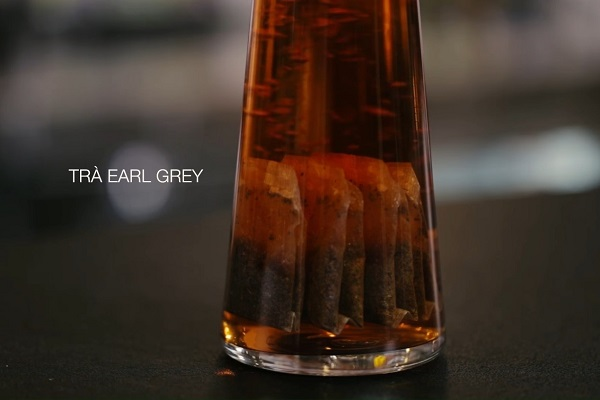
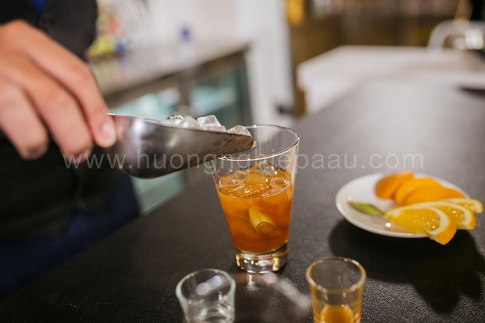
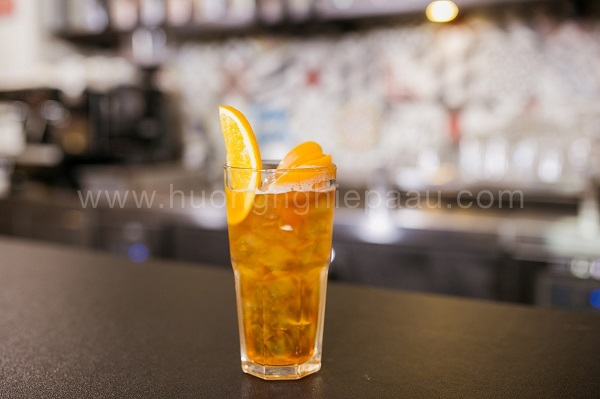

Trà đào, trà vải từng “làm mưa làm gió” một thời và đến nay vẫn chưa có dấu hiệu hạ nhiệt. Bạn có thể bắt gặp thức uống này từ các quán vỉa hè đến chuỗi thương hiệu đồ uống nổi tiếng với đủ mức giá và vô vàn cách biến tấu khác nhau.
Nguyên liệu
Trà Earl Grey túi lọc (trà Bá Tước): 4 túi
Đào ngâm: 3 miếng (bạn có thể dùng đào Hosen, Kronos, Rhodes hay Delphi đều được)
Cam vàng: 1 quả
Sả: 2 cây
Nước cốt chanh: 10ml
Nước đường: 10ml
Peach syrup: 20ml

Cách làm trà đào cam sả
Bước 1: Sả sau khi mua về bạn bóc lớp vỏ ngoài rồi rửa sạch với nước, 1 cây đập dập rồi cắt khúc, 1 cây cắt lát mỏng để trang trí.
Đun sôi 500ml nước với 1 cây sả đập dập trong khoảng 15 phút. Vớt sả ra, cho 100 ml nước sả vào ly và ngâm với 4 túi trà lọc từ 20-25 phút cho trà ra hết chất, rồi lấy túi trà ra.
Bước 2: Chuẩn bị 1 bình Boston shaker (gồm 1 ly inox và 1 ly thủy tinh), cho vào ly thủy tinh 10ml nước cốt chanh, 80ml trà vừa hãm, 10ml nước đường, 20ml peach syrup, thêm đá viên vào, đậy ly inox lên vỗ nhẹ để làm chặt bình.
Hai tay giữ chặt bình, lắc liên tục từ 10-20 giây đến khi bên ngoài bình lắc có hơi lạnh phủ kín là được..
Bước 3: Rót hỗn hợp trà đào ra ly, thêm vào 1 lát sả, 3 miếng đào ngâm và 1 lát cam tươi lên trên rồi thưởng thức.
Sự hài hòa giữa vị trà đậm mà không chát, vị sả thanh mát và những miếng đào thơm ngon mọng nước sẽ mang đến cho bạn một thức uống tuyệt vời trong những ngày nắng nóng.
